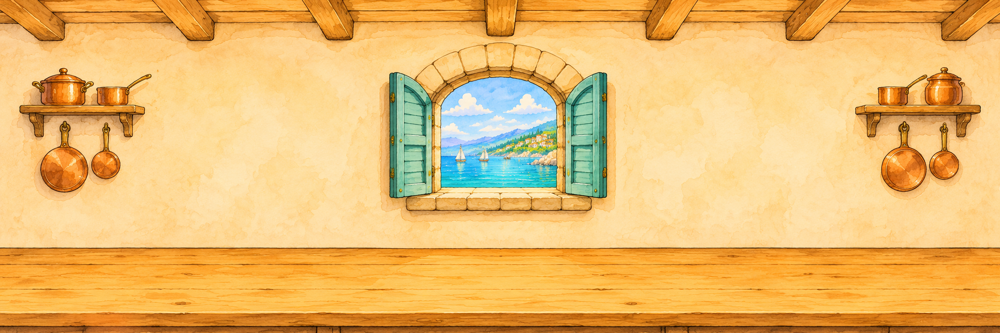

PORTO DELLE LINGUE · INGLESE
LA CUCINA DEL PORTO
ASCOLTA, DOSA, MESCOLA… E PORTA IN TAVOLA!
Hello, little chef!
LA TUA MISSIONE: prepara una ricetta seguendo le richieste in inglese.
- Leggi la richiesta o premi ASCOLTA.
- Trascina l’ingrediente nella ciotola: aggiungi una porzione alla volta.
- Controlla la quantità nella ciotola, poi passa alla richiesta successiva.
ESEMPIO: “Add 200 g of flour.” → farina da 100 g → trascina 2 sacchetti nella ciotola.
Completa 1, 5 e 10 ricette per conquistare i tuoi distintivi.

Ingredients
BOWL
OVEN
Your recipe is ready!
WORDS YOU USED
RECIPES COMPLETED: 0
GETTING THE KITCHEN READY…
Le ricette sono semplificate per il gioco. In una cucina vera chiedi sempre aiuto a un adulto.